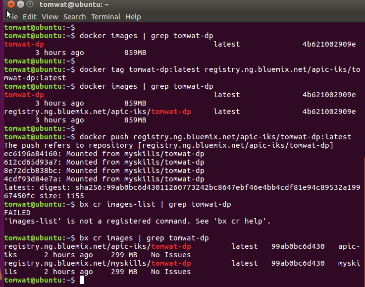
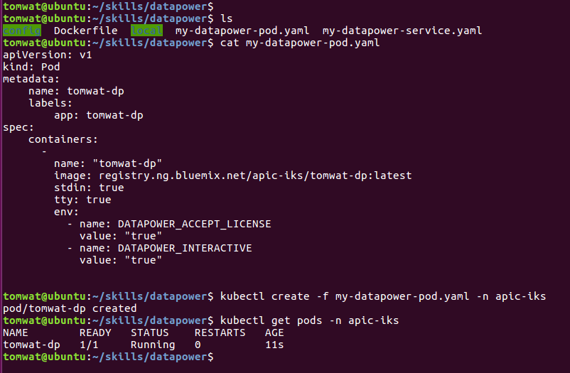
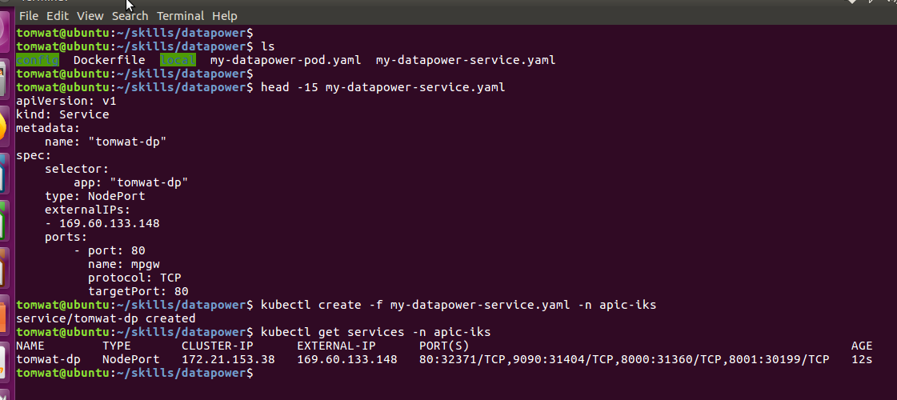
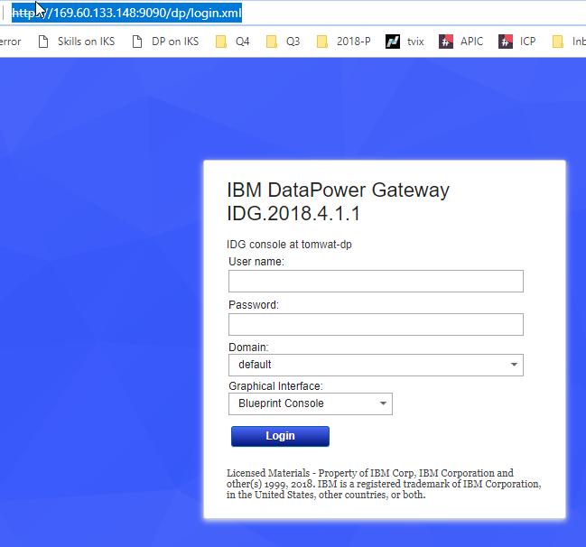

Note: a brand new namespace needs to be configured with ImagePullSecrets to access the Kubernetes private registry - see CheatSheets FAQ
Docker image must be copied from local to Kubernetes private registry
$ docker images | grep tomwat-dp
$ docker tag tomwat-dp:latest registry.ng.bluemix.net/apic-iks/tomwat-dp:latest
$ bx cr login
$ docker push registry.ng.bluemix.net/apic-iks/tomwat-dp:latest
Create the datapower pod using YAML file
$ cd /home/tomwat/skills/datapower
$ kubectl create -f my-datapower-pod.yaml
Create the datapower service using YAML file
$ cd /home/tomwat/skills/datapower
$ kubectl create -f my-datapower-service.yaml
Validate that Datapower is working on IKS
https://169.60.133.148:9090/dp/login.xml
http://169.60.133.148:8000/api/pokemons/1



